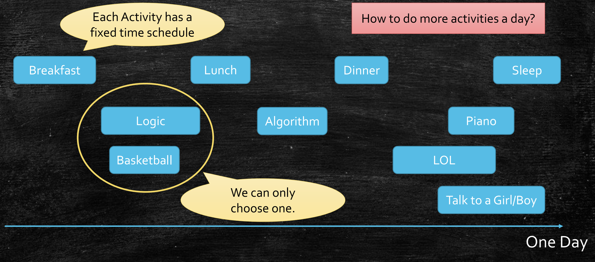
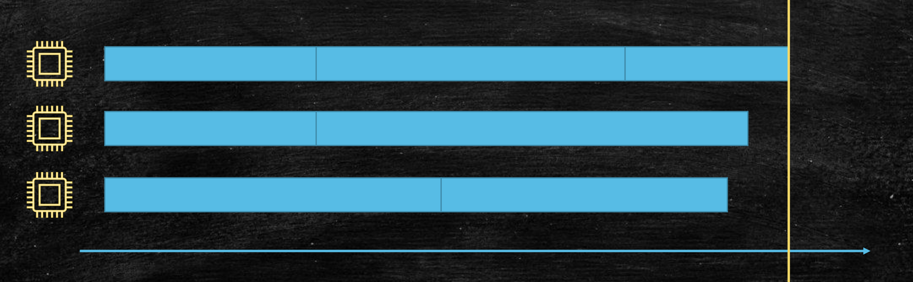
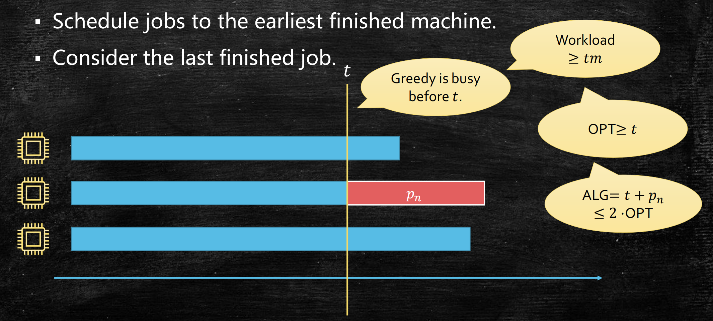
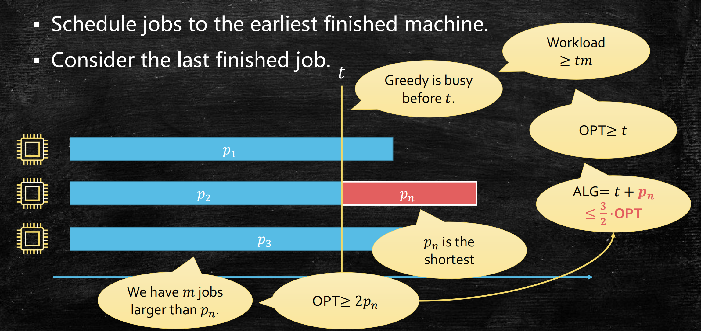

贪心算法(2)：编码与调度
Last updated on March 28, 2025 pm
本文为算法课程的知识点复习，主要复习内容为贪心算法——Huffman编码与机器调度，重点是贪心算法的正确性证明方法。
贪心算法的证明思路
以日程调度问题为例

- 贪心策略：快速完成优先（Finish Time First）
通用证明方法
- 核心：证明始终在最优的道路上，即当前是某个最优解（OPT）的一部分
- 归纳法结构：
- 基例： 属于某个最优解
- 归纳假设：前 步选择属于某个 OPT
- 归纳步骤：证明第 步选择后仍属于某个 OPT
- 交换论证：通过调整局部选择构造矛盾
编码问题 与 哈夫曼算法
问题定义
- 输入：字符集 ，频率函数
- 输出：构建最小代价前缀码树
- 代价函数：
前缀码特性
- 无前缀冲突：任意字符编码不为其他编码的前缀
- 树形结构表示：叶节点对应字符；左分支为0，右分支为1
哈夫曼编码算法
算法设计（自底向上构建）
- 将字符按频率升序排列
- 循环合并频率最小的两个节点
- 生成新节点（频率 子节点之和）
- 将新节点插入队列
正确性证明
- 核心思路：每一次合并后仍是 OPT 的一部分
- 交换论证：如果交换为 OPT 中节点，代价不变小
时间复杂度
-
初始排序：
-
重复 轮（堆实现）：
- 找两个最小节点：
- 删除两个节点：
- 插入一个节点：
-
总复杂度：
-
如果初始有序，用链表可以达到
哈夫曼编码的最优条件
- 情况1：有 个相同频率的字符
- 情况2： 个字符的频率分别为
- 信息论基础：
- 熵的定义：
- ，编码长度为
- 总代价为
- 熵是编码长度期望的最小值
机器调度问题
问题定义
- 输入： 台相同机器， 个作业，处理时间
- 输出：最小化全部完成时间

贪心策略分析
事实上，这是一个 NP-hard 问题，但贪心可以得到近似解。我们关心的是贪心解的质量，即是否小于 OPT 的常数倍。
简单贪心
-
算法步骤：
- 按任意顺序处理作业
- 将当前作业分配到最早空闲的机器
-
近似比：-近似算法
-
分析思路：
- ，

LPT算法
-
算法步骤：
- 将作业按处理时间降序排列
- 将当前作业分配到最早空闲机器
-
近似比：-近似算法
-
-近似分析思路：
- ，

- -近似分析思路：
贪心算法(2)：编码与调度
https://cny123222.github.io/2025/03/28/贪心算法-2-：编码与调度/